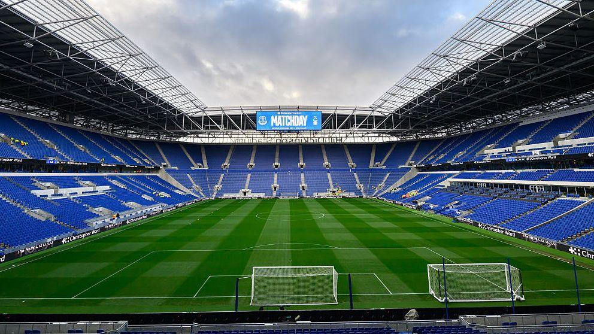

Moje pracovné prostredie
Prejdite myšou nad body na obrázku pre zobrazenie podrobných popisov jednotlivých častí štadióna.

Bránka
Hlavný cieľ zápasu. Futbalová bránka so sieťou umiestnená na bránkovej čiare.
Svetelná tabuľa
Veľkoplošná obrazovka na štadióne zobrazujúca aktuálne skóre, čas a informácie o zápase.
Striedačka
Priestor vyhradený pre náhradných hráčov, trénerov a realizačný tím počas stretnutia.
Tribúna
Sektor so sedadlami určený pre divákov a fanúšikov povzbudzujúcich svoj tím.
Ihrisko
Trávnatá hracia plocha s presne vyznačenými čiarami a stredovým kruhom pre výkop.